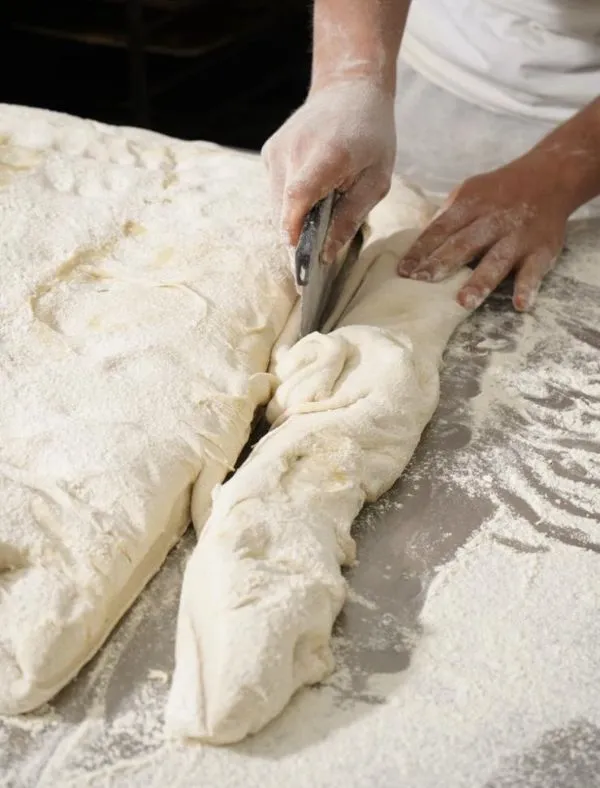
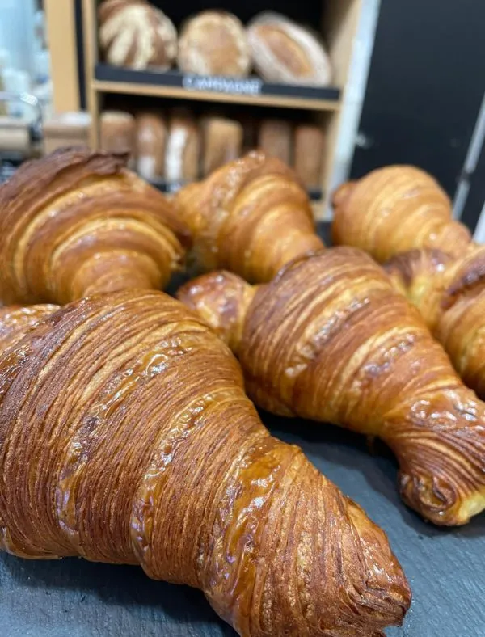

HORNO SAN MIGUEL
Aquí encontrarás un lugar mágico, donde el tiempo parece detenerse y cada bocado te trasportará a un mundo de sabores y texturas de otra época.
HAZ TU PEDIDOEl sabor de lo artesanal
Acompañado de los mejores productos
En Horno San Miguel, cada día comienza con el aroma del pan recién horneado y café recién molido. Hemos creado un ambiente acogedor, donde cada rincón y cada producto reflejan la dedicación y el cariño que ponemos en lo que hacemos.
Un lugar pensado para que tomes un respiro, disfrutes de los pequeños momentos y redescubras el auténtico sabor de lo bien hecho.

